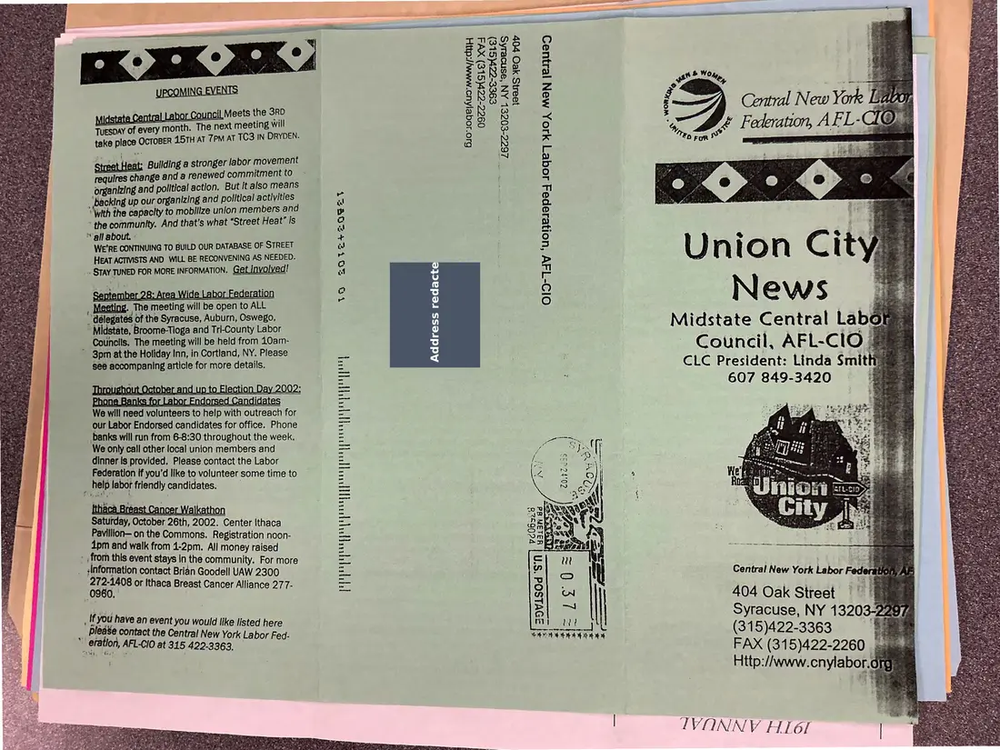
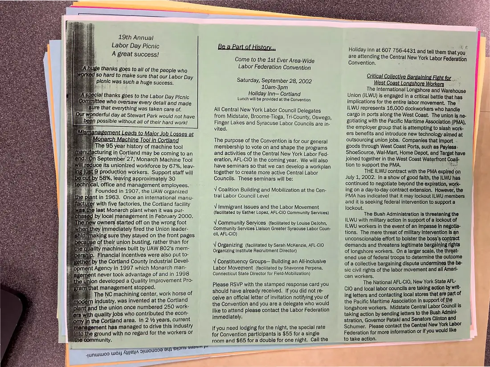
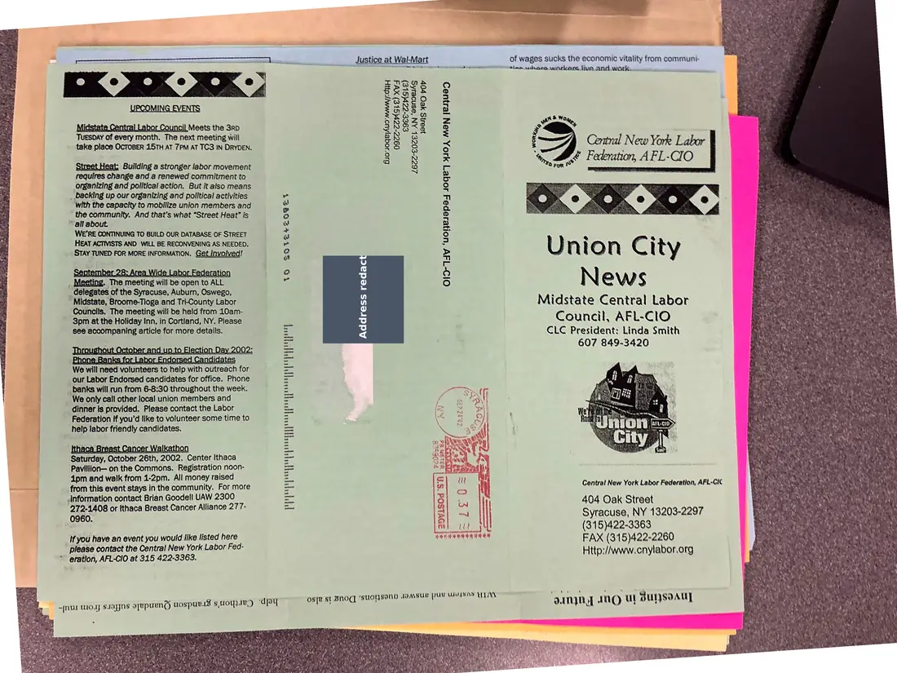
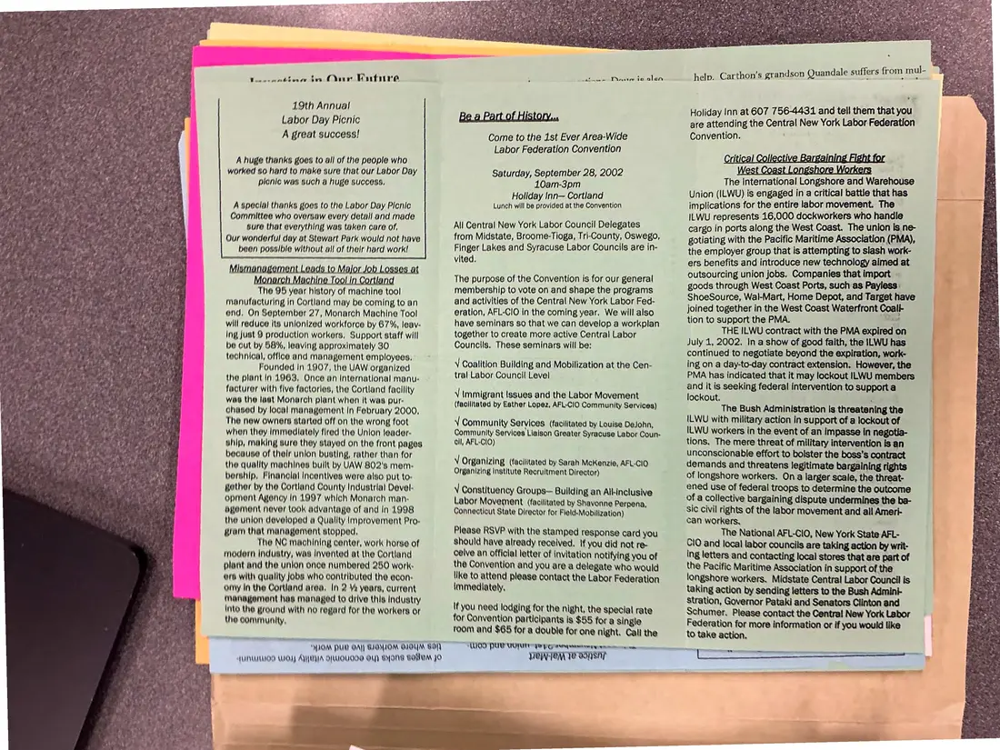

Newsletter, 2 pages, plus 1 additional copy
Union City News, Midstate Central Labor Council, October 2002
October 2002
Thanks supporters of the 19th Annual Labor Day Picnic, announces the first area-wide Labor Federation Convention (September 28, 2002), and covers the West Coast longshore lockout and plant closings in Cortland. Two copies were photographed.
Download or cite this itemPages


(open zoom view)A mailing label with a personal address has been covered on this page.
Read the page text (machine-read, contains errors)
This text was generated automatically from the photograph and has not been corrected. The image is the authoritative record.
INDO Eeag ® SORES as 8 Gx 23 XP &H SRE38 detate Central Labor UOuriu Meets the SRD a 8 8 vuespay of every month. The next meeting will z3 8 take place OCTOBER 45TH AT 7PM AT TC3 IN DRYDEN. 3 ‘ oe : it Bullding a stronger labor movement requires change and a renewed commitment to organizing and political action. But it also means O1D-T4V ‘UoReJepe4 Joqe7 410, MAN JejUaD ‘Backing up our organizing and political activities fi “With the capacity to mobilize union members and 5 ‘the community. And that’s what “Street Heat” is Q all about. - : WE'RE CONTINUING TO BUILD OUR DATABASE OF STREET w ) HEAT ACTIVISTS AND. WILL BE RECONVENING AS NEEDED. w : - STAY TUNED FOR MORE INFORMATION. Get Involved! 4 a 4 e100 ederati oO Ne $ ey to ALL S VAP AS” : e 5: Area VICE Ee , Meeting. The meeting will be open ~délegates of the Syracuse, Auburn, Oswego, Midstate, Broome-Tioga and Tri-County Labor Councils. The meeting will be held from 10am- * 3pm at the Holiday Inn, in Cortland, NY. Please see accompaning article for more details. Midstate Central Labowe Council, AFL-ClO 3 CLC President: Linda Smithy 607 849-3420 i® xe] hen My) hen xe) xe) 5 9 ‘a elle We will need volunteers to help with outreach for our Labor Endorsed candidates for office. Phone banks will run from 6-8:30 throughout the week. We only call other local union members and dinner Is provided. Please contact the Labor Federation if you'd like to volunteer some time to ; help labor friendly candidates. BCA east Lancer Waika aturday, October 26th, 2002. Center Ithaca Pavilllon—on the Commons. Registration noon- dpm and walk from 1-2pm. All money raised - from this event stays In the community. For more _ Information contact Brian Goodell UAW 2300 272-1408 or Ithaca Breast Cancer Alliance 277- 0960. yc06328 PEPELICE Central New York Labor 404 Oak Street Syracuse, NY 13203-2297 _ f you have an event you would like listed here _ please contact the Central New York Labor Fed- SERCLEREEES a eo . " eration, AFL-CIO at 315 422.3363, FAX (315)422-2260 situs Http://www.cnylabor.org: IR DOES SOOT A RH os POU EME 39V1SOd ‘sn IVONNYV HI6I


(open zoom view)Read the page text (machine-read, mostly readable)
This text was generated automatically from the photograph and has not been corrected. The image is the authoritative record.
19th Annual Labor Day Picnic A great success! Ay ge thanks goes to all of the people who WOIKEd So hard to make sure that our Labor Day picnic was such a huge success. |A Spe lal thanks goes to the Labor Day Picnic comm ittee who oversaw every detail and made 3 » gure that everything was taken care of. = 1.0% wonderful day at Stewart Park would not have ey) been possible without all of their hard work! BUGS SMeEN -Cags [0 iViajor Job Losses a mvionarch Machine Tool in Cortlana The 95 year history of machine tool acturing in Cortland may be coming to an n September 27, Monarch Machine Tool sauce its unionized workforce by 67%, leav- St 9 production workers. Support staff will UE by 58%, leaving approximately 30 jical, office and management employees. - + «=6@ ©Founded in 1907, the UAW organized the plant in 1963. Once an international manu- facturer with five factories, the Cortland facility Was the last Monarch plant when it was pur- Bd by local management In February 2000. w owners started off on the wrong foot 1ey immediately fired the Union leader- amaking sure they stayed on the front pages cause of their union busting, rather than for Jality machines built by UAW 802's mem- ip. Financial incentives were also put to- fr by the Cortland County Industrial Devel- ent Agency in 1997 which Monarch man- agement never took advantage of and in 1998 seine union developed a Quality Improvement Pro- gramithat management stopped. | The NC machining center, work horse of modern Industry, was invented at the Cortland and the union once numbered 250 work- re with quality jobs who contributed the econ- omy In the Cortland area. |n 2 % years, current management has managed to drive this Industry into the ground with no regard for the workers or ne community. -sunwuWoo WO} Ayyeya ou BUSTS SUT IO Come to the 1st Ever Area-Wide Labor Federation Convention Saturday, September 28, 2002 10am-3pm Holiday Inn— Cortland Lunch will be provided at the Convention All Central New York Labor Council Delegates from Midstate, Broome-Tioga, Tri-County, Oswego Finger Lakes and Syracuse Labor Councils are in- vited. The purpose of the Convention is for our general membership to vote on and shape the programs and activities of the Central New York Labor Fed- eration, AFL-CIO in the coming year. We will also have seminars so that we can develop a workplan together to create more active Central Labor Councils. These seminars will be: V Coalition Building and Mobilization at the Cen- tral Labor Council Level ¥ Immigrant Issues and the Labor Movement (faciiltated by Esther Lopez, AFL-ClO Community Services) ¥ Community Services (facilitated by Louise DeJohn, Community Services Llaison Greater Syracuse Labor Coun- cil, AFL-CIO) V Organizing (facilitated by Sarah McKenzie, AFL-CIO Organizing Institute Recruitment Director) y Constituency Groups— Building an All-inclusive Labor Movement (facilitated by Shavonne Perpena, Connecticut State Director for Field-Mobilization) Please RSVP with the stamped response card you should have already received. If you did not re- celve an official letter of invitation notifying you of the Convention and you are a delegate who would like to attend please contact the Labor Federation Immediately. If you need lodging for the night, the special rate for Convention participants Is $55 for a single room and $65 for a double for one night. Call the Holiday Inn at 607 756-4431 and tell them that you. are attending the Central New York Labor Federation Convention. ) aoe for. The International Longshore and Warehouse Union (ILWU) is engaged in a critical battle that has implications for the entire labor movement. The — ILWU represents 16,000 dockworkers who handle cargo in ports along the West Coast. The union Is ne- gotiating with the Pacific Maritime Association (PMA), the employer group that is attempting to slash work- ers benefits and introduce new technology aimed at outsourcing union jobs. Companies that import - goods through West Coast Ports, such as Payless: ShoeSource, Wal-Mart, Home Depot, and Target have joined together in the West Coast Waterfront Coall- tion to support the PMA. FOR at THE ILWU contract with the PMA expired on July 1, 2002. In a show of good faith, the JLWU has continued to negotiate beyond the expiration, work- ing on a day-to-day contract extension. However, the PMA has indicated that it may lockout ILWU members and it is seeking federal intervention to support a Jockout. a The Bush Administration Is threatening the ILWU with military action In support of a lockout of ILWU workers in the event of an impasse In negotla- tions. The mere threat of military Intervention Is an unconscionable effort to bolster the boss's contract demands and threatens legitimate bargalning rights of longshore workers. Ona larger scale, the threat- ened use of federal troops to determine the outcome of a collective bargaining dispute undermines the ba- sic civil rights of the labor movement and all Amert- can workers. ‘ The National AFL-CIO, New York State AFL- ClO and local labor councils are taking action by writ- ing letters and contacting local stores that are part of the Pacific Maritime Association in support of the longshore workers. Midstate Central Labor Council Is taking action by sending letters to the Bush Admint- stration, Governor Pataki and Senators Clinton and Schumer. Please contact the Central New York Labor Federation for more information or if you would like to take action. ee ee Se
Additional copies
The same document was photographed more than once. These copies may carry different handwriting, stamps, or paper.


(open zoom view)A mailing label with a personal address has been covered on this page.
Read the page text (machine-read, contains errors)
This text was generated automatically from the photograph and has not been corrected. The image is the authoritative record.
is Ss i TM 5 cs Justice at Wal-Mart of wages sucks the economic vitality from communi- Fl Ln where wal, ar live. and.wark...o. mere A Re en a a A Seen: TSMHs zoe e TUESDAY of every month. The next meeting will nie ccsan , take place OCTOBER 5TH AT 7PM AT TC3 IN DRYDEN. gg 3 $ a ete Labor : SBE Federation, AEL- StreetHeat: Building a stronger labor movement ‘S 8 nn ES ederation, AFL-CIO fe) requires change and a renewed commitment to organizing and political action. But it also means _ backing up our organizing and political activities with the capacity to mobilize union members and the community. And that's what “Street Heat” is “all about. WE'RE CONTINUING TO BUILD OUR DATABASE OF STREET HEAT ACTIVISTS AND WILL SE RECONVENING AS NEEDED, STAY TUNED FOR MORE INFORMATION. Get involved! BQVExXZGGZEy Union City News Midstate Central Labor Council, AFL-CilO CLC President: Linda Smith 607 849-3420 _ Meeting. The oaathg will Ss open to ALL “delegates : of the Syracuse, Auburn, Oswego, ~ Midstate, ‘Broome-Tioga and Tri-County Labor Councils. The meeting will be held from 10am- 3pm at the Holiday Inn, in Cortland, NY. Please see accompaning article for more details. q We will need canniears to help with cites for our Labor Endorsed candidates for office. Phone _ banks will run from 6-8:30 throughout the week. “We only call other local union members and dinner is provided. Please contact the Labor Federation if you'd like to volunteer some time to help labor friendly candidates. Saturday, October 26th, 2002. Center Ithaca Pavillion— on the Commons. Registration noon- dpm and walk from 1-2pm. All money raised from this event stays in the community. For more Central New York Labor Federation, AFL-CIC ee eT ier ot .information contact Brian Goodell UAW 2300 404 Oak Street s 277- aaa or Ithaca Breast Cancer Alliance Strecube thy 13208-2297 (315)422-3363 if you have an event you wouid like listed here FAX (315)422-2260 please contact the Central New York Labor Fed- te ” eration, AFL-CIO at 315 422-3363. Http://www.enylabor,org osye st Bnog ‘suOHsoNd JoMsuY PU ebm ELA ‘On n way an O ul Suryso AU]


(open zoom view)Read the page text (machine-read, mostly readable)
This text was generated automatically from the photograph and has not been corrected. The image is the authoritative record.
toecnntine te Our Hutire
19th Annual
Labor Day Picnic
A great success!
A huge thanks goes to all of the people who
worked 80 hard to make sure that our Labor Day
picnic was such & huge success,
A Special thanks goes to the Labor Day Picnic
Committee who oversaw every detail and made
sure that everything was taken care of,
Our wonderful day at Stewart Park would not have
been possible without all of thelr hard work!
ar BCT OO) IN VOrmandg
Tho 95 year history of machine tool
manufacturing In Cortland may be coming to an
ond, On September 27, Monarch Machine Tool
will reduce its unionized workforce by 67%, leav-
Ing Just 9 production workers, Support staff will
be out by 58%, leaving approximately 30
technical, office and management employees.
Founded In 1907, the UAW organized
the plant in 1963, Once an International manu-
facturer with five factories, the Cortland facility
was the last Monarch plant when It waa pur
ohased by local management In February 2000,
The new owners started off on the wrong foot
when they Immediately fired the Union leader-
ship, making sure they atayed on the front pages
because of thalr union busting, rather than for
the quality machines bullt by VAW 802's mem-
bership, Finanglal Incentives were alao put to-
Rother by the Cortland County Industrial Devel-
opment Ageney In 1097 which Monarch man-
agement never took advantage of and In 1998
the union developed a Quality Improvement Pro-
gram that management stopped,
The NOC machining center, work horse of
modern Induatry, was Invented at the Cortland
plant and the unlon once numbered 280 work:
ere with quality Joba who contributed the econ:
omy In the Cortland area. In 2 Va yeara, current
Management has managed to drive this Industry
Inte the ground with no regard for the workers or
the community,
AF Ee mE Ne
—SP1OM PUL OAT BIO[IOM BIOUM TO]
{UNUOD LUO APUHIA OLUOUESE OY) BONG BEMEM JO
nines intietenalads
Bea Part of History...
Come to the 1st Ever Area-Wide
Labor Federation Convention
Saturday, September 28, 2002
10am-3pm
Holiday Inn— Cortland
Lunch will be provided at the Convention
All Central New York Labor Council Delegates
from Midstate, Broome-Tioga, Tri-County, Oswego,
Finger Lakes and Syracuse Labor Councils are in-
vited.
The purpose of the Convention is for our general
membership to vote on and shape the programs
and activities of the Central New York Labor Fed-
eration, AFL-CIO In the coming year. We will also
have seminars so that we can develop a workplan
together to create more active Central Labor
Councils. These seminars will be:
V Coalition Building and Mobilization at the Cen-
tral Labor Counell Level
V Immigrant Issues and the Labor Movement
(facilitated by Esther Lopez, AFL-CIO Community Services)
¥ Community Services (facilitated by Louise DeJohn,
Community Services Liaison Greater Syracuse Labor Coun-
all, AFL-CIO)
Vv Organizing (facilitated by Sarah McKenzie, AFL-CIO
Organizing Institute Recruitment Director)
V Constituency Groups— Building an Alkinclusive
Labor Movement (facilitated by Shavonne Perpena,
Connecticut State Director for FieldsMobilization)
Please RSVP with the stamped response card you
should have already received. If you did not re-
ceive an official letter of invitation notifying you of
the Convention and you are a delegate who would
like to attend please contact the Labor Federation
immediately,
If you need lodging for the night, the special rate
for Convention participants is $55 for a single
room and $65 for a double for one night, Call the
help. Carthon’s grandson Quandale suffers from mul-
Holiday Inn at 607 756-4431 and tell them that you
are attending the Central New York Labor Federation
Convention. '
Critical Collective Bargaining Fight for
West Coast Longshore Workers
The International Longshore and Warehouse
Union (ILWU) is engaged in a critical battle that has
implications for the entire labor movement. The
JLWU represents 16,000 dockworkers who handle
cargo in ports along the West Coast. The union Is ne-
gotiating with the Pacific Maritime Association (PMA),
the employer group that is attempting to slash work-
ers benefits and introduce new technology aimed at
outsourcing union jobs, Companies that import -
goods through West Coast Ports, such as Payless:
ShoeSource, Wal-Mart, Home Depot, and Target have
joined together in the West Coast Waterfront Coali-
tion to support the PMA. Mead
THE ILWU contract with the PMA expired on
July 1, 2002. In a show of good faith, the ILWU has
continued to negotiate beyond the expiration, work-
ing on a day-to-day contract extension. However, the
PMA has Indicated that it may lockout ILWU members
and it is seeking federal intervention to support a
lockout. : ;
The Bush Administration Is threatening the
ILWU with military action in support of a lockout of
ILWU workers in the event of an impasse In negotia-
tions. The mere threat of military intervention Is an
unconscionable effort to bolster the boss's contract
demands and threatens legitimate bargaining rights
of longshore workers. Ona larger scale, the threat-
ened use of federal troops to determine the outcome
of a collective bargaining dispute undermines the be-
sic civil rights of the labor movement and all Ameri-
can workers,
The National AFL-ClO, New York State AFL-
ClO and local labor councils are taking action by writ-
ing letters and contacting local stores that are part of
the Pacific Maritime Association in support of the
longshore workers. Midstate Central Labor Council is
taking action by sending letters to the Bush Admini-
Stration, Governor Pataki and Senators Clinton and
Schumer, Please contact the Central New York Labor
Federation for more information or if you would like
to take action.See something wrong, or recognize a person or event? Send a correction. If you hold rights in this item or think it should not be public, write to the same address.